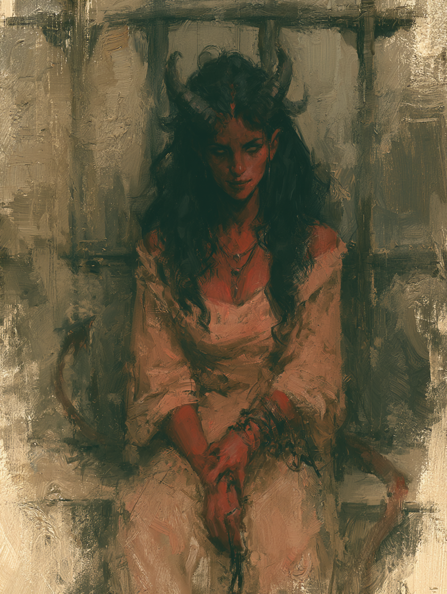

— Died in the Underdark —

The portrait is the player's own attempt to recreate her from memory after the fact. It is included for reference rather than as canon. She was a tiefling — horns, tail, the warm-toned skin of the lineage — and beyond that, the image is suggestive rather than definitive.
What the player has stated about her is in any case more important than how she looked. She was the kind of person who would have preferred not to be looked at closely.
The original sheet has been lost. What follows is what is known and what is not.
Earlier drafts of this dossier filled in plausible numbers for the missing fields. Those have been removed. The blanks are the truth of the record — what existed on the original sheet is no longer recoverable, and inventing it would tell us about whoever did the inventing rather than about Badriyah.
The specifics of her spell selection are gone. The mechanical scaffolding that every Fiend warlock and every tiefling carries at level 1 is not — these are rules-given, not invented for her.
She had made a pact. The pact had a counterparty. That counterparty was, by the player's statement, a fiend — and beyond the category, neither she nor the player knew who.
The L1 Fiend feature: when she reduced a hostile creature to 0 hit points, she gained temporary hit points equal to her Charisma modifier + her warlock level (minimum 1). Whether this ever triggered in play is not recorded; at L1, against the encounters she actually faced, probably not.
Two cantrips known, one first-level spell known, one first-level spell slot per short rest. The specific selections are not recorded. Pact Boon (Tome, Blade, or Chain) is gained at L2 and she never reached it.
60 feet. In the Underdark, the only thing on the sheet that performed as advertised.
Resistance to fire damage. Did not come up.
Standard tiefling spellcasting: Thaumaturgy cantrip at L1, Hellish Rebuke at L3, Darkness at L5. She had only Thaumaturgy in play.
Common and Infernal.
The player's stated concept: she was the right hand of someone in power. The model was Thomas Cromwell, or Henry Kissinger, or Cardinal Richelieu — the minister, the counsellor, the figure who works the levers while another wears the crown. A master political strategist. Someone who knew how to bend the rules without quite breaking them.
The specific principal she served — what house, what court, what office — was never established in play. The implication, never confirmed, was that something had gone sideways: she had either escaped the execution of her noble patron, or her noble patron had thrown her under the bus to save themselves. Either is consistent with where she started the campaign. Neither was settled.
She had made a pact with a fiend. She thought she had got the better of the deal. By the player's statement, she had not.
The character was built around that misjudgement. The intended dramatic engine was the slow discovery of the gap between what she believed she had negotiated and what she had actually signed. She did not live long enough to discover it.
The alignment as stated. She was not cruel for cruelty's sake. She was lawful because she worked through rules, instruments, agreements, and procedure; she was evil because she was willing to do whatever the procedure permitted, and she was very good at finding what the procedure permitted.
Two moments from the campaign were preserved by the player. They are recorded here in the form they were given.
The campaign opens with the player characters imprisoned. In the same cell were two halflings — non-player characters — discussing whether they might pick the lock. They had the skill. They did not have the tools.
Badriyah resolved the bottleneck. She took up a sharp stone, swung it down on one of the halflings' hands, and removed two of his fingers. She handed the severed fingers to the other halfling and instructed him to strip the meat from the bones and use the bones as picks.
The player has stated that the table was shocked: the other PCs, in the cells with her, and the GM. The act was not theatrical and not strictly required. She had decided it was the most efficient available solution, and she had executed.
It was an introduction. Inside the first session, before anyone had a chance to be confused about who she was, she had established it. Not cruelty — there is no indication she enjoyed the halfling's pain — but a coldness about the cost of solutions that did not fall on her. Lawful Evil in operation, not in description. Whatever else the campaign was going to be, this was the person the rest of the party was now travelling with.
Several sessions into the campaign, the party encountered a group of fish-people on a religious pilgrimage. Badriyah's own idea — not the party's, not the GM's prompting — was to present herself to them as an avatar of their deity.
It failed catastrophically. They killed her on the spot for blasphemy.
Executed by the pilgrims for blasphemy, following her attempt to pass herself off as an avatar of the god they were travelling to honour. She was Level 1. At Level 1, a warlock has very little hit-point cushion, and any sufficiently committed religious group has more than enough to settle the matter.
It is, in retrospect, of a piece with the character. The same self-belief that produced the finger incident produced the avatar gambit. She had been right often enough, with enough people, that she had stopped distinguishing between situations where her read was reliable and situations where it was not. The pilgrims were the second kind. She did not know they were the second kind until they had answered the question.
The dramatic engine the character had been built around — the eventual moment when she discovered the fiend had outplayed her — never got to fire. It was replaced, much earlier and much faster, by a smaller version of the same lesson, delivered by people she had underestimated for reasons that were not very different from the reasons she had underestimated the fiend.
Badriyah was a character built for an arc she did not reach. The patron she had outsmarted, the principal she had served, the political world she had come from — all of that was scaffolding for a story about a clever person learning, slowly and at terrible cost, what cleverness does not protect against. The campaign ran long enough to establish who she was. It did not run long enough to test her.
What was tested, instead, was whether she could survive her own confidence in a context that did not reward it. The fingers worked. The avatar did not. Two data points are not enough to draw a curve, but they are enough to suggest one: the same disposition was responsible for both, and the same disposition would have been responsible for the third moment, and the fourth, if she had got to them.
A name. A concept. A pact whose terms were never spoken aloud at the table, signed with a counterparty whose identity even the player did not know. Two moments — one establishing, one terminal — that between them constitute most of what the campaign got to say about her. A portrait drawn from memory.
The fiend, somewhere, still holds the contract. What it intended to do with her can no longer be answered.
This dossier is closed. Where the original record had numbers, this version has blanks; where it had specific spells and choices, this version says they are not recorded. The two events of play that the player preserved are preserved here. The rest is gone — not reconstructed, not inferred, not invented to fill the page. That is the honest shape of what is left of her.